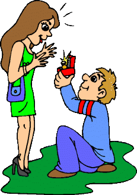
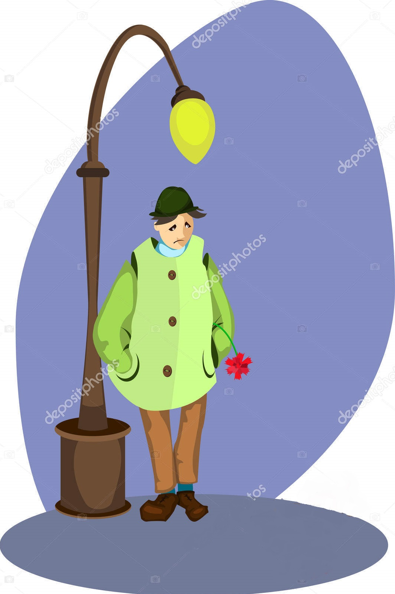
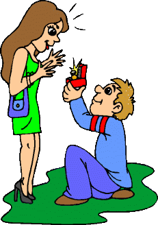
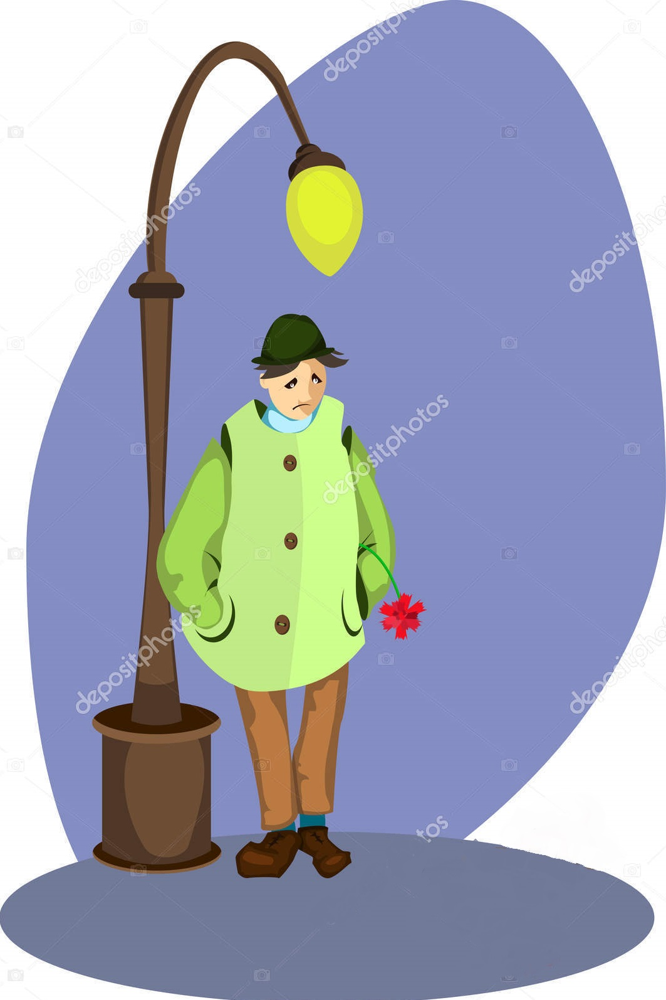

The Lost Ring Story
One day a man goes home.He says to his wife,
(bir gün bir adam evine gider.)(eşine der ki)
“I have a present for you because today is Valentine’s Day.”
(sana bir hediyem var çünkü bugün sevgililer günü)
The man puts his hand into his pocket
(adam elini cebine sokar)
and takes a golden ring out of his pocket.
(ve cebinden bir altın yüzük çıkarır.)
While he is giving it to his wife,
(onu karısına verirken)
he drops it on the floor.
(yere düşürür.)
He looks for it on the floorbut he can’t find it.
(onu yerde arar.)(ama bulamaz)
Because it is dark inside.
(çünkü içerisi karanlıktır.)
He goes out into the street under a street lamp.
(dışarı bir sokak lambasının altına gider.)
He looks for it under the street lamp.
(yüzüğü sokak lambasının altında arar.)
Just then another man comes along and asks,
(o sırada bir başka adam gelir ve sorar.)
“What are you looking for?”The man answers,
(ne arıyorsun?)(adam cevap verir.)
“I am looking for my golden ring.”
(altın yüzüğümü arıyorum)
The other man asks,“Where did you lose it?”
(diğer adam sorar.)(onu nerede kaybettin)
The man answers,
(adam cevap verir)
“I lost it inside the house.”
(onu evde kaybettim)
The other man says,“You are foolish.
(diğer adam der ki)(sen aptalsın)
You lost it inside the house
(onu evin içinde kaybettin)
but you are looking for it under the street lamp.”
(ama onu dışarda sokak lambasının altında arıyorsun.)
The man says,“It is dark inside,
(adam der ki)(içerisi karanlık)
so I can’t see it.
(onu göremiyorum)
But it is light under the street lamp.
(ama sokak lambasının altı aydınlık)
I can see it clearly.
(onu iyi görebilirim.)
 


